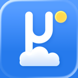

Privacy Policy
MicroSky, updated 2 November 2026
MicroSky doesn't care who you are or why you want the weather, and doesn't try to find out. It has no accounts, ads or analytics, sells nothing about anyone, and keeps nothing about you beyond what a setting you turn on needs, for as long as it is on, or a problem report you choose to send, for 90 days and with nothing that names you, and, so no one can use up what everyone shares, a scrambled count, for a day, of what your connection, or the app's day pass, asks of the server (Good to know, below). Your exact location never leaves your phone.
Where you are stays on your phone
MicroSky divides the map into squares about a kilometre across (0.01° of latitude and longitude). Whenever the app asks a weather service about a place, it asks about the centre of the square the place is in, never the place itself. Your phone works out the square; your exact position is never sent.
The centre is always less than 800 m from anywhere in its square. The forecast models behind MicroSky work on grids of about 1 to 13 km, so asking about the centre almost always gives the same forecast you would get for your doorstep.
Your exact position is still used, on your phone only, where a few hundred metres matter:
- which weather stations are nearest, and how far away they are;
- the sun, the moon and the sky drawn behind the forecast;
- the Storm Prediction Center's severe storm outlook, in the lower 48 states: your phone fetches the same national outlook files for everyone and works out which area your place is in, so nothing about the place is sent;
- how near a tropical storm is: your phone and your watch ask the MicroSky server for every storm the National Hurricane Center advises on, the same list for everyone, and work out how far each is from your place, so nothing about the place is sent. Places far from the Atlantic and the eastern and central Pacific ask for nothing.
What leaves your phone
- For a forecast: with Use MicroSky's Server on, as it is unless you turn it off, your phone sends the MicroSky server the place's square and its time zone, so each day starts at the place's midnight, and, in or near Canada and Germany, your language for those services' French or German text. Not its height, and nothing that identifies you or your phone. The server asks the free weather services about the square and merges their answers into one forecast with the same code as the app, and your phone adds Apple Weather, your own stations and your own Open-Meteo key to it. For the current conditions in or near the United States, Canada and Germany your phone still asks the national weather service itself about the square, as it chooses among the service's stations with the place's height and your choices; the service is not sent the height. It also asks a national service itself for the square's alerts when the server could not get them. The server keeps a square's answers, and its merged forecast with the time zone and language it was asked in, until nobody has asked about the square for two hours, and its lookups (which weather grid and stations it falls in) until nobody has asked about it for 14 days, with nothing about who asked in them (what it counts of your connection is under Good to know). When the server cannot send the merged forecast, your phone asks it for the services' own answers, with the centre of the square and its height, or asks each weather service itself. Turned off, your phone asks each weather service itself, with the same, and sends the MicroSky server nothing but a problem report you send and the requests that delete what it kept; air quality, tropical storms' cones and tracks, the notices it sends while MicroSky is closed and the morning forecast need it on.
- For a place's name and height: the centre of its square. When Apple cannot name My Location, or give the time zone of My Location or of a place saved without one, and Use MicroSky's Server is on, the square alone is sent to the MicroSky server too, which answers from a time zone map and town list it holds, asks no one else, and keeps nothing about who asked.
- For tropical storms, while Tropical Storms and Use MicroSky's Server are on: nothing about the place or you. Your phone and your watch ask the MicroSky server for its one list of storms, as everyone does, and the server keeps nothing about the request.
- For tides, while the Tides card shows: the ID of the tide station nearest the centre of the place's square, which your phone finds itself from a list in the app. While Use MicroSky's Server is on, it is sent to the MicroSky server, which asks NOAA for each station about once a month and answers everyone at a station the same, and keeps nothing about who asked; otherwise, or when the server cannot answer, to NOAA itself.
- For the radar, in the United States: the map tiles on screen, each a square tens of kilometres across at the card's zoom, asked of the Iowa Environmental Mesonet at Iowa State University. Which tiles are asked for shows roughly where the map is, as it would on any map; no place, name or anything about you goes with them. Turn the Radar section off in Forecast Layout and none are asked for.
- For air quality, if you turn it on with Use MicroSky's Server: the centre of the place's square, sent to the MicroSky server without anything that identifies you or your phone, with the forecast's time zone and language. The server answers from the AirNow figures it already holds, and keeps nothing about the request.
- If you turn on a setting under While MicroSky Is Closed: the server keeps each place you asked it to watch, as the centre of its square, with its name and time zone, a random ID for your phone that is not tied to you, your phone's language and region (such as English, United States) for the words of its notices and how they write times, Apple's push tokens so it can reach your phone, a scrambled fingerprint of what your phone last sent, so a daily check-in that changed nothing needs no work, which notices it has already sent, so none comes twice, and which rain countdowns on the Lock Screen you closed, so they stay closed for up to six hours. With a subscription it also keeps the date your plan ends, read from Apple's signed record of it, so it knows how long to watch for rain; nothing else about the purchase is kept. It keeps these only while a setting is on, deleting what each one sent when you turn it off, and deletes the rest when you turn the last one off, but for what the morning forecast below still uses, or after 30 days without hearing from your phone. The weather it fetches is used at once and not kept, but for one word for each rain countdown on your Lock Screen: what it last showed falling (rain, snow, sleet, hail, or rain and snow), as the server sent it or your iPhone says, so the countdown can say so when it ends. Apart from any phone, for each square it has checked, and each block of 10 by 10 squares (0.1°), it notes whether Apple forecasts rain by the minute there and, for squares, whether the US National Weather Service issues alerts there, so it asks once a month, not for every phone. It watches each place as it told your phone, never by these notes, and deletes each note 30 days after it last checked, at the next hourly tidy.
- If you turn on the morning forecast: the server keeps the place it is for, as the centre of its square, with its name and time zone and the time you picked, a random ID for your phone that is not tied to you, your phone's language and region, Apple's push token so it can reach your phone, a scrambled fingerprint of what your phone last sent, and which mornings it has sent, so none comes twice, and, as for everything it is asked, only a scrambled count for a day of the new devices and notification addresses your connection, or the app's day pass, sends (Good to know, below). It fetches no weather for it: at that time it sends your phone a notification, and your phone refreshes the place from the same sources the app uses and writes the notice itself. Turning it off deletes the time and which mornings it sent at once; the rest is kept only while it or a setting under While MicroSky Is Closed is on, and deleted when you turn the last of them off, or after 30 days without hearing from your phone.
- To show it is really MicroSky, while Use MicroSky's Server is on: once a day your phone, and your watch for itself, gets a day pass from the server, which counts requests that carry it as the app's rather than by your connection. The first time, Apple's App Attest vouches that a key your phone made belongs to MicroSky on a real device; after that the key signs a random challenge. With a subscription, the key also signs Apple's record of your plan each time your phone sends it, so the server can tell the record came from your phone. The server checks the signature and counts, in memory for the day, how many records the key signed, so one phone cannot sign for many. The server keeps the key's ID and public key, how many times it has signed and the day it last did, never the time. Turning Use MicroSky's Server off has your phone, and your watch, ask the server to delete them, asked again until it answers, and the server deletes any key unused for 60 days anyway. The pass never carries the key. It carries a code for the day it was given, the same in each pass one phone gets that day, so they are counted as one, as a scrambled number kept a day. The code is made with a random secret the server holds only in memory and drops as the day ends, so after that no one, the server included, can tell whose it was or tie one day's passes to another's. The server never records which phone a pass went to, so it says nothing about who you are.
- If you report a problem: what you write, the app's version, your phone's system version and kind (such as "iPhone17,1"), its language, which settings and sections are on, and which weather sources failed, all listed in the form before you send it. A screenshot only if you choose one, redrawn so nothing stored with the picture goes too, and the place's 1 km square and time zone only if you tick it. Nothing that names you or your phone goes with it, and the server keeps the time it arrived only to the hour, so no reply can be sent. Reports are deleted after 90 days.
MicroSky keeps no logs of requests and has no accounts, analytics or advertising.
Good to know
- Requests to the MicroSky server pass through Cloudflare, which sees your internet address as part of delivering them, like any website. If one internet address sends more than 200 requests in 10 seconds, Cloudflare turns the rest away for 10 seconds, and its security log, which only MicroSky's developer can open, shows each request it turned away, with the address and what was asked, for as long as Cloudflare keeps that log. MicroSky copies nothing from it.
- So that no one can use up what everyone shares, the MicroSky server counts, for the UTC day, every request each internet address sends, how much it has it fetch, merge and send of forecasts, how many places it looks up to watch, and how many devices, notification addresses and reports it sends; about ten busy phones' worth of each is allowed, and all the addresses on one network that have no day pass share ten times that. It holds the address, and its network, only scrambled with a random key it makes in memory each time it starts and never writes down, beside the counts alone, not what was asked, and forgets them within a minute of the day ending. Nothing of it is logged or stored but the day's totals, which name no one: how many callers there were with a pass and without, what they used, the most one used and how many ran out; the share given to callers without a pass, and any change to it; how many keys were made or deleted, passes renewed, subscription records signed, devices asked to attest again and attestations not accepted; whether unsigned records count, and any change to it; the requests refused for want of a pass where nothing else counts them; the bytes sent; the calls it made to the NWS and Bright Sky, and through its IPv4 way out; how many times it asked Apple's WeatherKit each day, kept 60 days; and how many keys are held. Tropical storms, tides, air quality and place names are counted the same way. A phone or watch with a day pass is counted by the tag the pass carries instead, the same way, never the key, and every pass asking from one connection together has at most ten allowances; problem reports and asking for a pass are always counted by the address.
- Warnings are looked up for the centre of the square. A warning drawn to end between the centre and your exact position could be missed for a few hundred metres at its edge. Warning areas are drawn to about a kilometre themselves; checking the whole square is planned.
- Apple Weather is asked directly by your phone, under Apple's own privacy terms.
- If you connect a weather station or add your own Open-Meteo key, the token or keys you enter are kept in your Keychain, which iCloud Keychain shares with your other Apple devices if you use it, and are sent only to that service: Tempest, Davis WeatherLink, Ambient Weather, Ecowitt, Weather Underground or Open-Meteo.
- The holidays you choose in Celebrations stay in MicroSky's settings on your iPhone, and go from it straight to your Apple Watch so its sky shows the same. They are never sent anywhere else, never guessed from where you are, and every one is off until you choose it.
- The server reaches MET Norway and Environment Canada through Cloudflare, since they cannot be reached from it directly. Cloudflare passes on the same square and nothing more, and keeps nothing.
What comes next
- Done: the 1 km square. Every request leaves your phone naming only the place's square: by its centre, or, for the server's merged forecast, by its south-west corner.
- Done: air quality from the server. The server reads the air quality for the United States from AirNow and answers for your square, so your phone makes one small request.
- Done: forecasts from the server, worldwide. Your phone asks once per place instead of several times, saving battery and data, and still asks the services itself whenever the server cannot answer.
- Done: one merged forecast for each square. The server merges the free sources once for everyone in a square, with the app's own code, and your phone no longer sends a place's height to get it.
Analytics
MicroSky contains no analytics or crash-reporting code. If you choose to share analytics with app developers in your device's settings, Apple provides the developer with counts such as downloads and crashes, which do not identify you.
Children
MicroSky is suitable for all ages and collects nothing that identifies anyone, children included.
Changes
If this policy changes, the new version will be posted here with its date.
Contact
Questions about privacy can be asked on MicroSky's support page.